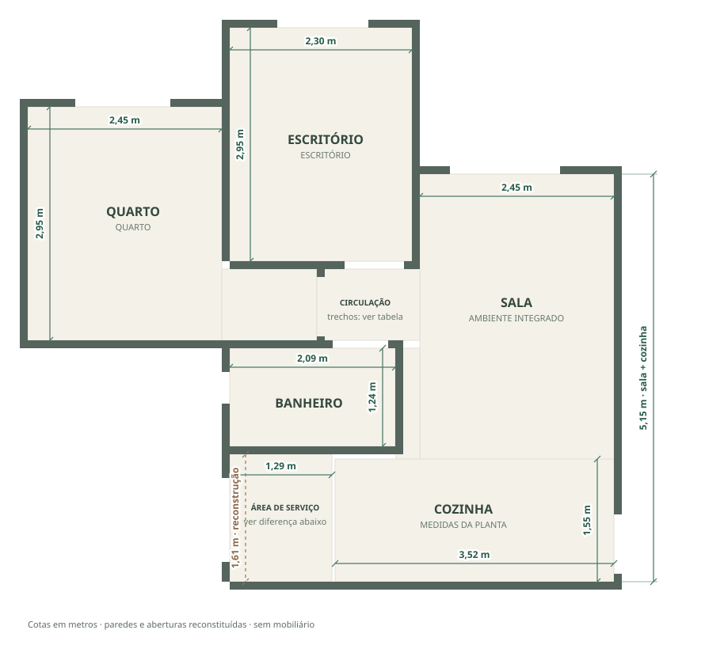
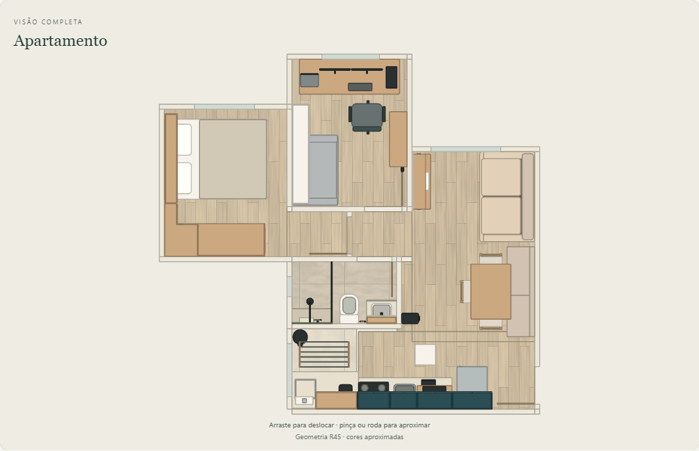
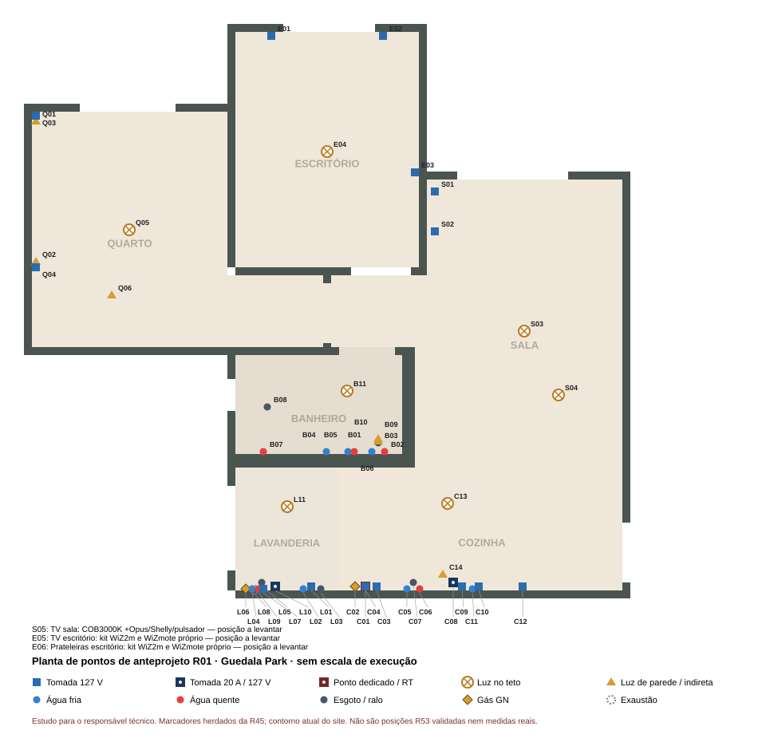
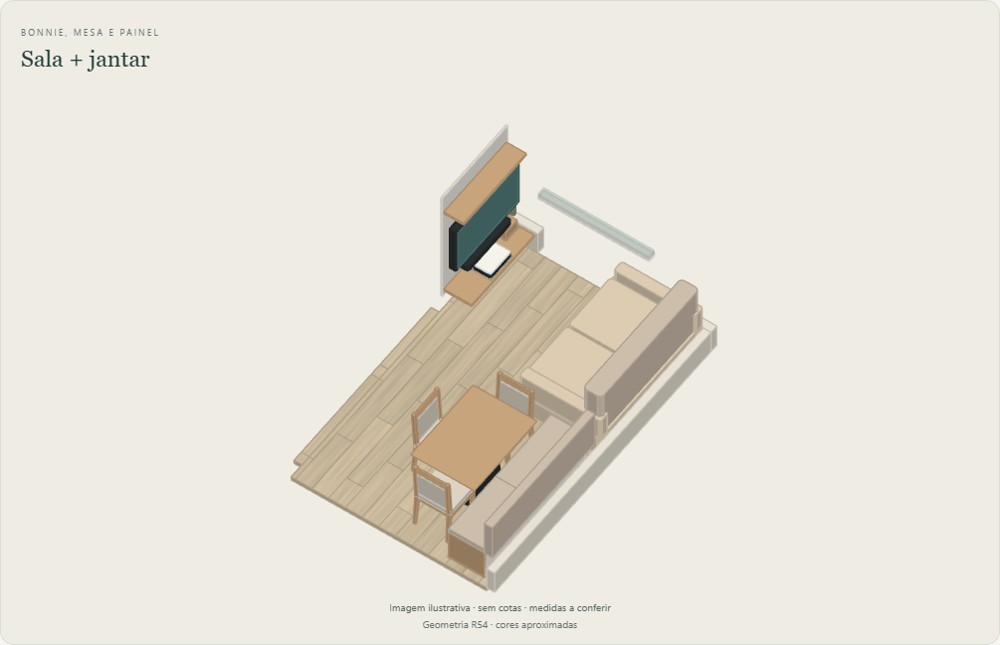
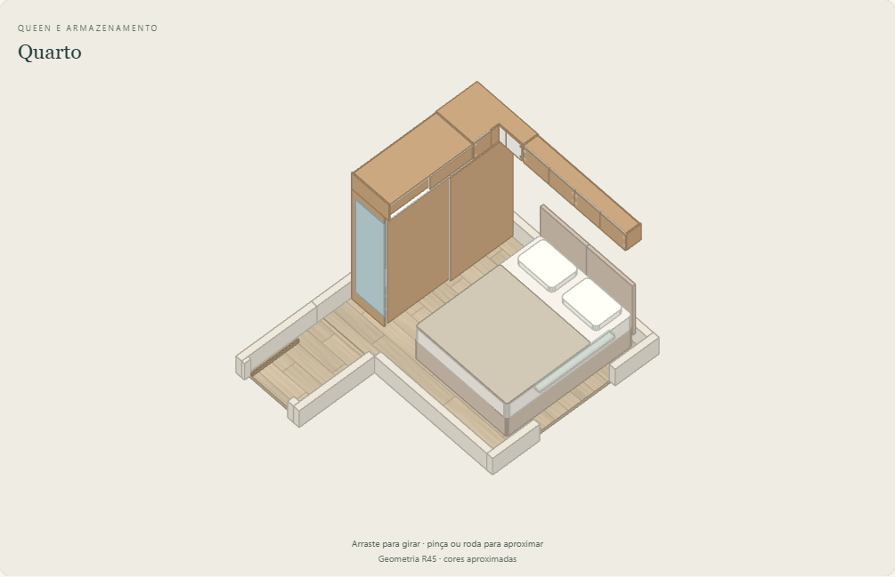
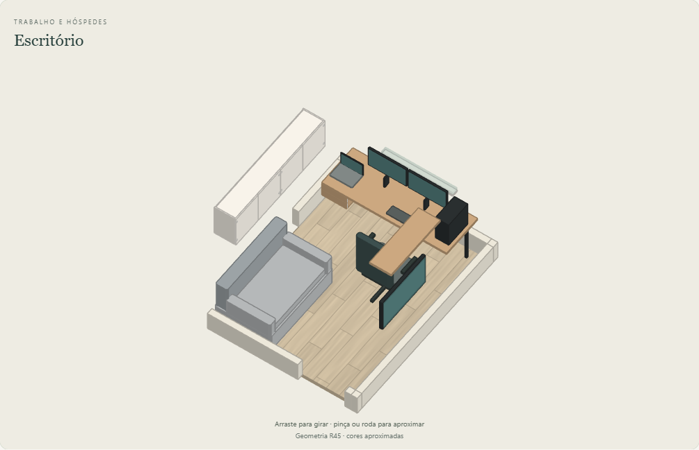
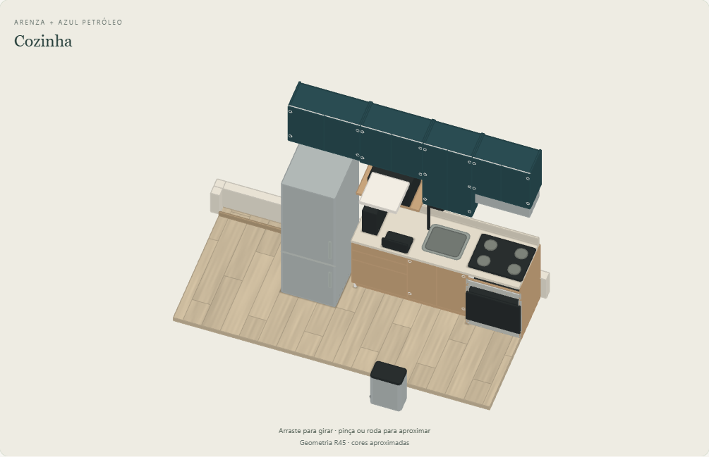
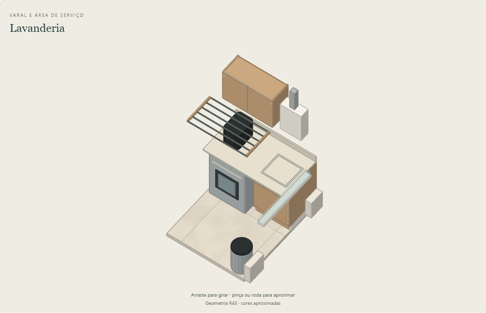
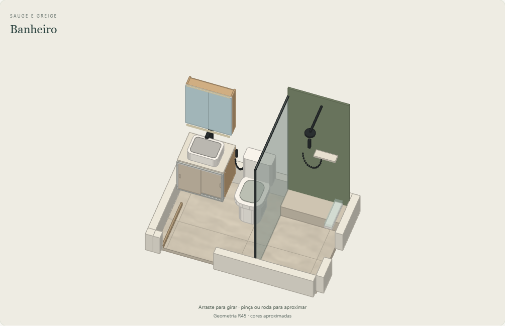

Projeto de interiores · caderno de pranchas R01 · 27/10/2026
| Nº | Prancha |
|---|---|
| 01 | Planta cotada — paredes e medidas da planta oficial |
| 02 | Planta de layout — mobiliário |
| 03 | Planta de pontos — elétrica, iluminação, água, esgoto e gás |
| 04 | Vistas — sala e jantar · quarto |
| 05 | Vistas — escritório · cozinha |
| 06 | Vistas — lavanderia · banheiro |
Documentos complementares: programa de necessidades R01, caderno de especificações R01, fichas de fabricação R15, cronograma R00 e plano de reforma (rascunho), na pasta do projeto. Estudo preliminar para o responsável técnico: medidas a conferir no imóvel; não executar. Esta revisão integra a planta de pontos R01 e as decisões D03/D04 de27/10. Layout e vistas permanecem referências R45; não representam a geometria R53. Modelo FCStd preservado.








